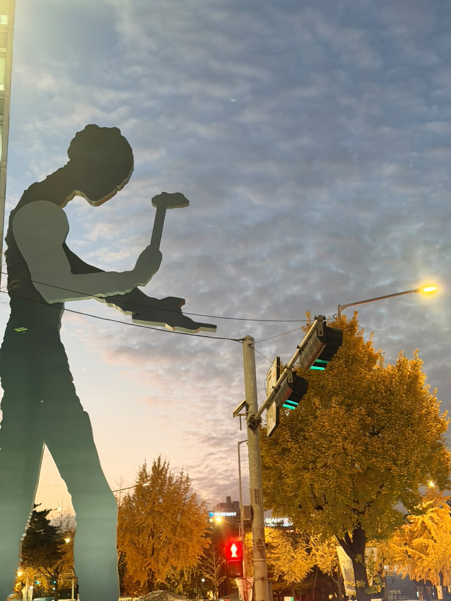

From technical SEO in Pakistan to GEO strategy for global brands, by way of a robotics & vision lab in Seoul.
The overlap between AI engineering and technical SEO/GEO — and everything on either side of it.
Formal training on both sides of the split — engineering research and applied computing.
certifications
quick facts
About
I'm Hamza — an AI Researcher and Generative Engine Optimization (GEO) Specialist based in seoul. I spend half my time making sure generative engines understand and cite targeted websites content correctly, and the other half asking the same question of vision models in a research lab.
After finishing my Bachelor's in Computer Science in Pakistan, my path started in web development, building and optimizing sites for clients. That's where I got interested in the technical side of search: schema, site architecture, and how search engines actually crawl and rank a page. I moved deeper into SEO from there, eventually leading teams and client strategy, before coming to Seoul for a Master's in Computer Engineering to get closer to the AI systems underneath it all, where I joined the HCIR Lab to study AI/ML algorithms, how to build effiecient architectures and how models represent what they see.
Now I sit at the overlap: applying that model-level intuition to how AI search actually works, at Assembly Seoul, while continuing the research thread through published work.
Full career and academic history lives in Experience and Education above — this is just the throughline.
Get in touch
Open to AI/research roles, GEO & technical SEO roles, and select client work. Based in Seoul, happy to work async or in English.
